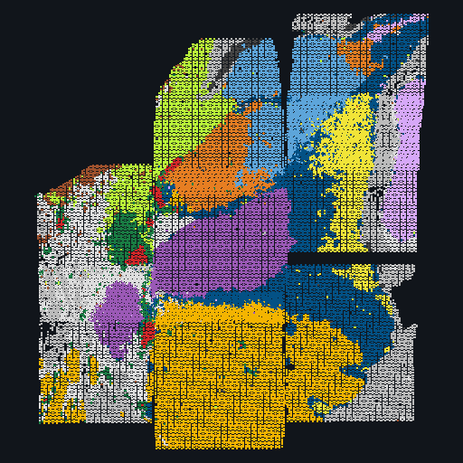

The human brain,
cell by cell, in place.
Nexus brings together LIBD's spatial transcriptomics and single-nucleus datasets, from dorsolateral prefrontal cortex to amygdala, in one fast browser. Color a section by any gene, hover for the domain and cell type underneath, lasso a region, and share the exact view with a link.
Featured atlases
Every dataset opens in the same viewer. Each card leads with a real section from the data, colored by its spatial domains.

NewHuman amygdala
Visium, Visium HD and Xenium sections with Banksy spatial domains, RCTD cell type weights and a BLA snRNA-seq reference.
Human DLPFC
spatialDLPFC: 30 Visium sections across 10 donors with layer-level spatial domains and paired snRNA-seq.
Human hippocampus
Hippocampal formation across 10 donors on Visium with snRNA-seq and Visium-SPG; subfield and neuropil domains.
Locus coeruleus
Norepinephrine neurons of the locus coeruleus on Visium and snRNA-seq.
Every section, every modality, one fast map
All samples of a study sit side by side under identical settings. Color by a gene or two blended gene sets, keep spatial-domain outlines on top, hover any cell for its domain, cell type and expression, lasso a region for its composition, and share the exact view as a link.
- Paired snRNA-seq renders beside the tissue with one shared cell type vocabulary
- Visium, Visium HD and Xenium in the same frame, switchable with one click
- Static files only: nothing to install, nothing to wait on
The science behind the sections
A data-driven single-cell and spatial transcriptomic map of the human prefrontal cortex
Huuki-Myers LA, Montgomery KD, Kwon SH, et al.
Data & code →An integrated single-nucleus and spatial transcriptomics atlas of the human hippocampus
Thompson JR, Nelson ED, Tippani M, et al.
Data & code →Spatial and cellular architecture of the human amygdala across Visium, Visium HD and Xenium
Totty MS, et al.
Explore the data →Take the data, and the viewer, with you
Browser, command line or Globus; versioned objects with DOIs; MIT-licensed viewer. Read the open science page →
- 1Every dataset is a plain, documented bundle you can download or read programmatically. No API keys, no accounts.
- 2The viewer, spatialscape, is MIT-licensed. Point it at your own bundle and it works the same way.
- 3Build your own bundle from AnnData or SpatialExperiment with one command and host it anywhere static files live.
pip install spatialscape
spatialscape init "visium/*/outs" -o dataset.yaml
spatialscape build dataset.yaml -o my_atlas
spatialscape serve . --port 8787
# then open the viewer with ?d=http://localhost:8787/my_atlas